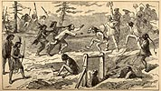

){kind=link}

|
[From] Chapter XXXVII. Chinese vs Diggers. THE American is not the only race subject to trouble in the various operations of mining. Even the Celestials, who occupy the neglected nooks and corners of the mineral regions, have their share of adversity and disaster in the pursuit of wealth. Whenever they strike a good claim it belongs to some white man. He may never have seen or heard of it, or may have abandoned it and gone elsewhere; but if "John Clinaman" strikes it rich he comes back or sends his partner to take possession. The Digger Indians are learning the great lesson of civilization from their American benefactors. Driven from gulch to canon in their own country, they see that "Melican man" claims mines and minerals on general principles, and, like him, they despise an inferior race. They hate the Chinese because "Chinaman squaw; no kill Injun like Melican man!" They seem to look upon the Celestials as a base imitation of the Indian race, without the redeeming quality of bravery. Hence the Diggers are singularly bitter in their hostility to these miserable interlopers, and tax them without mercy, or kill them whenever they get a chance. One Indian chief and his band made several thousand dollars last summer by following np the Chinese and compelling them, by force of arms, to pay taxes for the privilege of working the mines. Poor John is taxed by the State, by the Government, by every white pilgrim who jogs along with pick and shovel, by his own people, and finally by the Digger Indians. Sometimes he rouses himself up to a spirit of resistance against the exorbitant claims of the latter, and then ensues a scene to which no pencil save that of Hogarth could do justice. The aboriginal tax-collectors come along stealthily--one, two, or three at a time, till ten or a dozen of them are gathered about the camp of the Celestials. Their arms consist of a bow and arrow, and a rude club or a spear; and their costume is seldom more than a deerskin, or a ragged old blanket, with the merest pretense of a cincture round the loins. A wretched tatterdemalion set they are--poor, thriftless, and dirty; in no respect like the warrior chiefs of Mr. Fenimore Cooper, or the braves of the Hon. Augustus Murray. Still there is fight in them if pushed to the bank. Their contempt for the Chinese is sublime. Having no knowledge of the Mongolian language, it becomes necessary that they should speak English, which is the available means of communication with the trespassers. "Say, John!" says the Digger Chief, "what you do here?" "Me workee. Who you?" "Me Piute Cappen. Me kill plenty Melican man. Dis my lan'. You payee me, John. No payee me, gottam, me killee you!" "No got--velly poor Chinaman; how muchee you want?" "Fifty dollar." "No got fifty dollar--velly poor. Melican man he catches Chinaman; he makes Chinaman pay; no got fifty dollar. Melican man--" " D--n Melican man! me no sabbe Melican man! Me Piute Cappen. S'pose you no payee me fifty dollar, me killee you!"  Generally the money is paid, after many protests and various lamentations; but where the Digger force is small, and the Celestials numerous, the cry of battle is raised, and then comes the tug of war. When Greek meets Greek the spectacle may be very impressive; when Chinaman meets Digger it is absolutely gorgeous! Negotiation has been prolonged without issue; the English language has been exhausted; the fight is inevitable. From every hole in the earth the valiant Celestials rush forth, armed with picks and shovels, tin pans, platters, gongs, and kettles--every thing that can be made available for warlike purposes in the emergency of the moment. They beat their pans, blow their wind instruments, shriek, shout, laugh, make horrible faces, and perform the roost frightful antics, in the hope of striking terror into the racks of the foe. In every conceivable way they tax invention to make themselves hideous; poke their tongues out; double themselves up; hop on one leg; squat on the ground like frogs; rush furiously toward the enemy, and furiously retire. The hills and forests resound with their barbarous cries and the deafening clatter of their tin kettles and gongs. Meantime the Diggers are not idle. Adepts in the artifices of barbarian war, they are in no degree intimidated by the ferocious demonstrations of the enemy. A pistol or a shot-gun has its terrors, but they are up to the flimsy substitute of load noises and empty threats. While the foe is thus wasting his vital powers upon the air, Digger goes in with his clubs, spears, or bows and arrows. A few pricks of the barbed instruments generally ends the battle--save when the Celestial party can muster up an old shot-gun or a pistol, in which case they fight with heroic desperation, and sometimes come off victorious. But a pistol or gun in the hands of the enemy brings them to terms very speedily--and thus are they forced to pay the tax that breaks the camel's back. It ought to be a consolation to them to know that they do it for the benefit of civilization. Every dime they pay benefits some white whisky-dealer in Virginia City or Carson, or some other civilized place. |